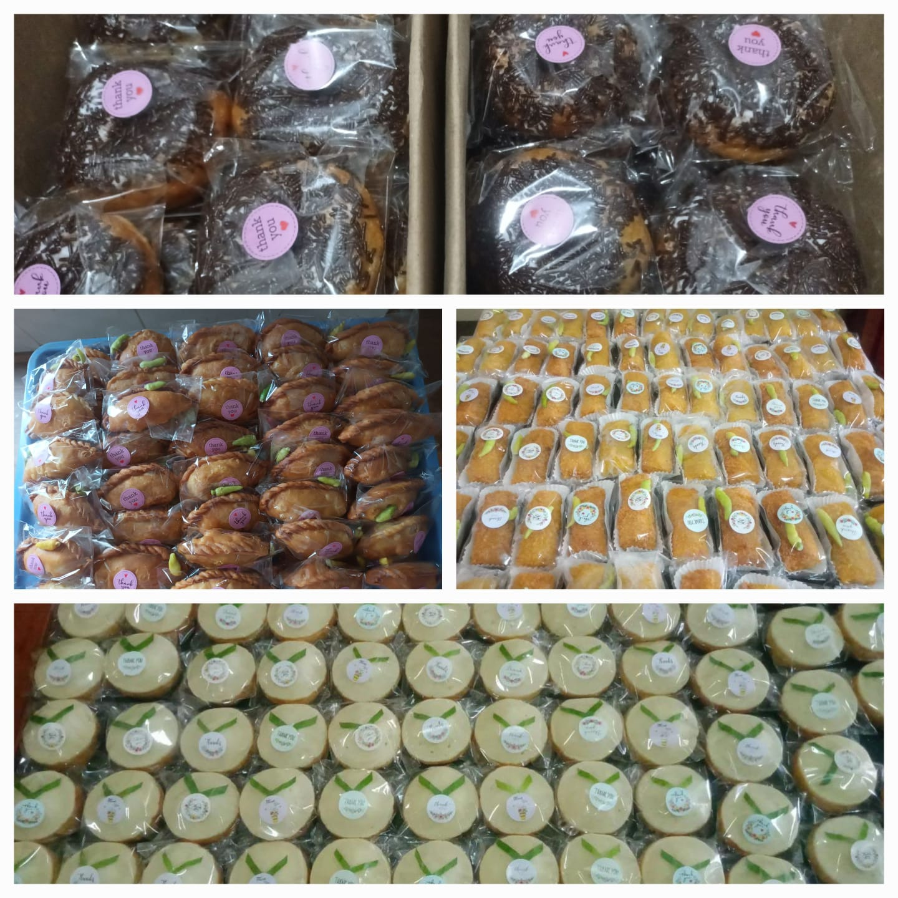

Ibu (Pemilik & Koki Utama)
Mengelola resep andalan, kualitas bahan baku, serta pengawasan rasa setiap hidangan.
Cemal-Cemil-Chika
Berawal dari hal kecil menjadi sebuah dapur makanan siap saji, Cemal-Cemil-Chika hadir menyajikan aneka camilan dan hidangan rumahan yang hangat, higienis, dan sehat.
Setiap menu diracik langsung oleh Ibu menggunakan bahan segar pilihan dan dibuat secara manual. Dari pesanan harian hingga orderan katering acara, kami menjaga rasa konsisten layaknya masakan rumah sendiri.

Mengelola resep andalan, kualitas bahan baku, serta pengawasan rasa setiap hidangan.
Membantu pencatatan pre-order, reservasi paket acara, dan koordinasi pengiriman.
Kisah perjuangan dapur kami beradaptasi dari masa ke masa hingga dipercaya pelanggan.
–
Berawal dari jualan makanan kecil-kecilan seperti kerupuk dan kacang. Pada masa ini, makanan masih dititipkan di warung sekitar dan kantin sekolah.
–
Pada masa ini, jualan kacang dan kerupuk tidak berjalan baik karena hampir semua warung tutup, kondisi sekolah juga kosong, dan kantin diliburkan sehingga dagangan sempat berhenti total.
–
Di era maraknya PHK massal, Cemal-Cemil-Chika membuat perubahan dari jualan kerupuk dan kacang beralih ke makanan ringan serta makanan berat. Menu pertama saat itu adalah martabak mie dan siomay ayam.
–
Penjualan mulai dialihkan ke gerai online seperti Grab dan Gojek, namun sejak 2025 penjualan difokuskan di gerai ShopeeFood.
– Sekarang
Cemal-Cemil-Chika sudah memiliki pelanggan tetap dan menerima orderan dalam jumlah banyak, baik untuk acara keluarga, acara formal, maupun jajanan harian. Gerai kami juga tersedia di ShopeeFood atau Anda bisa memesan langsung lewat halaman Pesan.
Ya, kami melayani pesanan dalam jumlah besar untuk acara kampus, arisan, maupun rapat keluarga. Sebaiknya pesan minimal 1 minggu sebelumnya agar persiapan maksimal.
Kamu bisa langsung mengisi formulir di halaman Pesan atau menghubungi kontak yang tertera di halaman Kontak.
InsyaAllah seluruh bahan terjamin halal dan dimasak segar sesuai pesanan setiap hari.